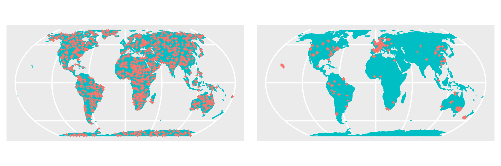

Validation#
Learning objectives#
Get to know typical validation strategies in EO
Understand where uncertainties appear in a workflow by design
Understand why validation is important
The validation of large scale mapping products
Validate some pixels of the snow cover area map
What is validation#
The validation process typically involves comparing a model or a developed Earth Observation (EO) product with reference data, and the level of agreement is assessed using validation metrics. Validating EO products is crucial to prevent misinterpretation or error propagation when utilizing the data for purposes such as area quantification, subsequent modeling, or planning, particularly in contexts like nature conservation or risk assessment. However, validating EO products poses significant challenges.
In this tutorial, we will explain how to derive validation metrics and how to interpret them. Our primary focus will center on the difficulties and limitations inherent in the accuracy assessment process, especially in the context of large-scale (global) mapping products based on Earth Observation.
Critically Analyse a workflow#
Identify sources of uncertainty in the applied workflow
Process graph with pop-ups of sources of uncertainties
Strategies of how to improve
Now that we have carried out a very basic approach to solve our research question we should take some time to identify possible sources of uncertainty and think about how to improve them:
Optical earth observation has some inherent drawbacks, most importantly: clouds. Especially in mountain regions.
We are excluding images where a certain cloud coverage is exceeded. There would still be some information available.
We are not filling in the gaps that clouds generate. This leaves us with some uncertainty.
Use data fusion techniques and include SAR data, that can penetrate the clouds.
Sentinel-2 has a 6 day repeat rate. This means we do not know what happens with the snow cover in between two acquisitions.
Use data fusion techniques and include other optical sensors and SAR data
Use physical snow models or heuristics to estimate the snow cover in between
We are using a threshold for discriminating between snow and no snow. Changing this arbitrary value will influence our results.
There are better, more complex ways to identify snow.
Snow Cover does not represent the amount of snow.
Therefore we would need to calculate the snow depth.
Or better the Snow Water Equivalent.
Typical validation approaches#
Reference data#
Reference data for EO are commonly obtained through field surveys or visual expert assessments of the underlying EO data. These reference datasets play a dual role, serving not only for validation purposes but also as essential components for training models, particularly when the EO product relies on predictions from a data-driven model. Consequently, when referring to reference data, a broad distinction is made between training and test data. The training dataset is employed in the model development phase, while the test dataset is crucial for evaluating the quality of the resulting product, specifically assessing the accuracy of predictions generated by the model.
Model validation and map validation#
Many EO products are generated using data-driven models, which can range from simple rule-based models to more complex machine learning models. In the process of creating such EO products, two distinct validation steps are crucial: model validation and map validation. During model validation, we evaluate the model’s ability to predict the target variable (e.g., snow cover) based on EO data (e.g., optical satellite imagery). This evaluation often involves cross-validation, where the training data are divided into multiple folds. Iteratively, one fold is withheld during model training, and these reserved data are used to test the model’s performance in predicting unseen data. Cross-validation typically includes tuning the model (adjusting hyperparameters, selecting variables) to identify the optimal model for predicting the held-back data. If (and only if) the training data and the derived cross-validation folds are representative for the prediction area (see discussion later), the cross-validation performance may be used as an indicator for the map accuracy.
To properly measure the map accuracy, a probability sample of the prediction area is required. This might be a random sample of the entire area that is used to describe the fit between the prediction (i.e. the map) and the reference. However, in numerous scientific publications, this essential step is often omitted, and model performance alone is presented as the sole indicator for map accuracy. The following section outlines the risks associated with this practice.
Validation metrics#
Validation metrics summarize the fit between predictions and reference. For continuous variables (e.g. snow depth), Root Mean Square Error or Coefficient of Determination are commonly used validation metrics. For categorical variables (e.g. land cover), Accuracy or F1 score are frequently used summary statistics. For binary classifications, the area under the ROC curve may be used. However, there are many more validation metrics expressing the fit between prediction and reference by focusing on different aspects.
Validation strategies in the absence of a probability sample#
When reference data are randomly distributed across the prediction area, validation metrics can be computed by comparing predictions and reference through a randomly selected subset of the entire reference dataset used as test data. Alternatively, in cross-validation, the training data may be randomly partitioned into multiple folds. However, the availability of design-based samples is infrequent, particularly in large-scale mapping endeavors like global applications. Typically, reference data are sourced from extensive databases, such as soil profiles or vegetation surveys, resulting in high clustering within areas that have been extensively studied or are easily accessible. Conversely, certain areas may entirely lack reference data, as illustrated in the accompanying figure.

Figure 1: Comparison between 1000 randomly sampled reference data (left) and a highly clustered sample of the same size (right) that is typical for many environmental data sets. Reference: https://doi.org/10.1038/s41467-022-29838-9
When such data are randomly split into training and test sets or cross-validation folds, a significant issue arises: the lack of independence between training and test data. This stems from the fact that both sets originate from the same geographic areas, whereas the trained model is deployed to make predictions for much larger areas without available reference data. Ploton et al., 2020, illustrate the consequences: overly optimistic validation statistics that deviate from the actual quality of the map.
To address this challenge, various spatial data splitting methods have been proposed. These methods involve splitting reference data based on spatial units, spatial blocks, or by considering spatial autocorrelation, all with the aim of ensuring independence between training and test data (e.g. Brenning 2012, Roberts et al., 2017, Valavi et al., 2019) or representativeness for the prediction task (Mila 2022, Linnenbrink 2023).
Limits to accuracy assessment#
Employing validation strategies tailored for spatial data enables us to offer the most accurate estimates of map accuracy, albeit with certain limitations. Reflecting on the reference data illustrated in Figure 1, large areas lack coverage from any reference data. While it is technically feasible to generate predictions for these areas, the question arises: is this a reasonable approach?
Assuming that new geographical spaces often goes along with new environmental conditions, it becomes likely that our models may not be applicable to these environments due to non-applicable relationships. For instance, consider reference data for vegetation traits sampled in low elevations; it raises questions about the model’s applicability to high elevations where the traits might be influenced by different factors. This challenge is particularly pronounced when employing machine learning models, as their extrapolation abilities are often limited. When making predictions, the model is compelled to extend its predictions into unknown areas, making predictions for regions beyond the trained data range highly uncertain. This, however, is not reflected by the validation statistics that were calculated based on the reference data, hence knowledge on the performance in the data-poor regions is not included. As a result, the statistics fail to reflect the accuracy of the model in these areas, and predictions for regions outside the original data range should be approached with caution due to their inherent uncertainty.
It is therefore important to limit predictions to the area where the model was trained and validated for. Meyer and Pebesma 2021 provide one suggestion to derive the “area of applicability” of prediction models that is based on distances to reference data in the predictor space. Other suggestion limit predictions to the geographic proximity of reference data (Sabatini et al., 2022).
Communication of validation#
As outlined above, the step of accuracy assessment involves considerable considerations on the data used for evaluation and requires awareness on the area these statistics are considered valid for. This challenge becomes particularly crucial when reference data fail to represent a comprehensive sample of the entire prediction area, a common scenario in many geoscience applications - to avoid overly optimistic performance estimates and hence false conclusions on the map accuracy. The validation procedure hence needs to be carefully communicated alongside the predictions. The resulting EO product (i.e. the prediction map) should be limited to the area for which the model was enabled to learn about relationships and for which performance estimates can be reliably provided for. This can be done by either masking the map or by providing an additional quality layer.

Video content in cooperation with Hannah Meyer (University of Münster).
“Validation isn’t optional. It’s a must.”
Exercise#
Let’s apply some validation steps on a cloud platform in practice!
Quiz#
Theory#
What are common problems in creating and validating global maps?
[[x]] The spatial distribution of reference data: There are usually areas in the world where reference data is clustered and areas where there is hardly any data available.
[[ ]] None: We have cloud computing that can scale to produce global maps and machine learning models can automatically account for data sparse regions.
[[x]] The availablility of reference data: Some biophysical indicators are not measured frequently in space and time in the field (e.g. leaf area index, snow water equivalent)
What is the Area of Applicability?
[( )] It's the topic the map covers (e.g. vegetation cover)
[( )] It's the extent of the map.
[(x)] It's the area of the map where the values are representable.
Exercises#
How many snow stations are in the catchment? Answer in the exercise: 33_validation.ipynb section ‘Load snow-station in-situ data’
[( )] 3
[( )] 7
[(x)] 5
Which openEO process is used to extract the time series of the snow covered area at the station locations? Answer in the exercise: 33_validation.ipynb
[( )] reduce_spatial
[( )] resample_cube
[(x)] aggregate_spatial
Which is the station where the mapped snow cover has the lowest accuracy? Answer in the exercise: 33_validation.ipynb section ‘validate the SCA results with the snow station measurements’
[( )] Rifiano Beobachter
[( )] Saint Leonardo in Passiria Osservatore
[(x)] Plata Osservatore
When is the date with the maximum runoff/discharge? Answer in the exercise: 33_validation.ipynb section ‘compare to discharge data’
[( )] 2018-06-03
[( )] 2018-04-17
[(x)] 2018-05-03
How is the relation between snow cover and runoff/discharge? Answer in the exercise: 33_validation.ipynb section ‘compare to discharge data’
[( )] When the snow cover is high, also the runoff is high.
[(x)] Snow melt is followed by increased runoff.
[( )] Snow melt is followed by reduced runoff.
Further Reading#
References#
Meyer, H., Pebesma, E. Machine learning-based global maps of ecological variables and the challenge of assessing them. Nat Commun 13, 2208 (2022). https://doi.org/10.1038/s41467-022-29838-9
Meyer, H., & Pebesma, E. (2021). Predicting into unknown space? Estimating the area of applicability of spatial prediction models. Methods in Ecology and Evolution, 12, 1620–1633. https://doi.org/10.1111/2041-210X.13650
Loew et al. (2017): https://agupubs.onlinelibrary.wiley.com/doi/epdf/10.1002/2017RG000562
Brenning et al. (2012): https://doi.org/10.1109/IGARSS.2012.6352393
Valavi et al. (2019): https://doi.org/10.1111/2041-210X.13107
Roberts et al. (2017): https://doi.org/10.1111/ecog.02881
Ploton et al. (2020): https://doi.org/10.1038/s41467-020-18321-y
Milà et al. (2022): https://doi.org/https://doi.org/10.1111/2041-210X.13851
Linnenbrink et al. (2023): https://doi.org/10.5194/egusphere-2023-1308
Sabatini et al. (2022): https://doi.org/10.1038/s41467-022-32063-z